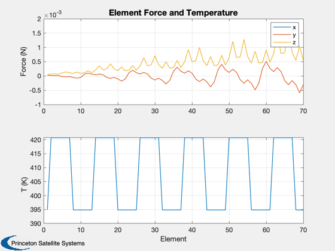
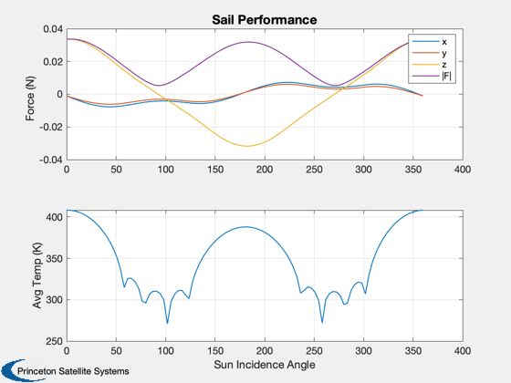
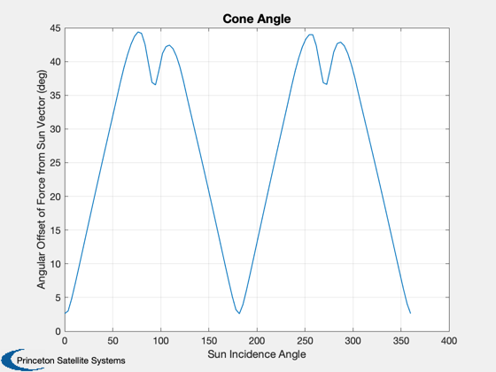

Demonstrate the solar pressure force function using a striped sail quadrant.
Plots the force and temperature on each area element. Uses the material properties of uniform CP1.
Since version 7. ------------------------------------------------------------------------ See also SolarPressureForce, StripedQuadrant, CP1Props., PolygonProps, Plot2D, Dot, Mag, Unit, SolarFlx ------------------------------------------------------------------------
Contents
%------------------------------------------------------------------------------- % Copyright 2007 Princeton Satellite Systems, Inc. All rights reserved. %-------------------------------------------------------------------------------
Get a striped sail quadrant component (vertices and faces)
%----------------------------------------------------------- lQuad = 50; % m nStripes = 6; billow = 0.3; [v, f] = StripedQuadrant( lQuad, nStripes, billow );
Obtain the polygon properties from the v/f
%-------------------------------------------
[area, nB] = PolygonProps( v, f );
nEl = length(area);
Other parameters
%-----------------
uSun = [0;0;-1];
flux = SolarFlx( 0.5 );
Material properties for CP1
%----------------------------
[optical, infrared, thermal] = CP1Props;
Compute the force and temperature of each element
%--------------------------------------------------
[f, T, fT] = SolarPressureForce( area', nB', uSun, flux, optical, thermal.emissivity );
Plot the results
%----------------- Plot2D(1:nEl,[f;T],'Element',{'Force (N)' 'T (K)'},'Element Force and Temperature',... 'lin',{1:3,4}) subplot(2,1,1); legend('x','y','z')
Compute the performance of the whole component for a range of angles
%--------------------------------------------------------------------- theta = linspace(0,2*pi); nPts = length(theta); uSun = [sin(theta);zeros(size(theta));-cos(theta)]; force = zeros(3,nPts); Tavg = zeros(1,nPts); for k = 1:nPts [f, T, fT] = SolarPressureForce( area', nB', uSun(:,k), flux, optical, thermal.emissivity ); force(:,k) = fT; Tavg(k) = mean(T); end
Plot the results
%----------------- Plot2D(theta*180/pi,[force;Mag(force);Tavg],'Sun Incidence Angle',{'Force (N)','Avg Temp (K)'},... 'Sail Performance','lin',{[1 2 3 4],5}) subplot(2,1,1) legend('x','y','z','|F|') angle = acos(Dot(Unit(force),-uSun)); Plot2D(theta*180/pi,angle*180/pi,'Sun Incidence Angle','Angular Offset of Force from Sun Vector (deg)',... 'Cone Angle') %-------------------------------------- % PSS internal file version information %-------------------------------------- 